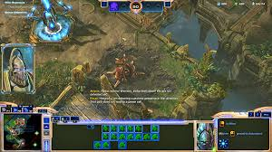

Home
Wings of Liberty
Heart of the Swarm
Legacy of the Void
ALSO KNOWN AS THE BEST CAMPAIGN IN THE SERIES
Prologue
Rescue Zealots mission
Ts is so easy you just do things that the Protoss do. Like bulldoze everything in their way with high templars, archons, immortals and colossi
Vespene mission
One word. CARRIERS if you get a bunch they wil shredd everything in the way. I tried using the void ray strat but void rays suck in this I tried them and kind of got shredded by a couple stalkers.
.
The Main Campaign
Aiur
.jpeg)
Image from Starcraft 2 wiki
Alright we're finally doing something. JUST kidding just a+click to the objective with your army to win.
Rescuing Artanis
This mission you just need to spam stalkers and have only a couple of zealots to soak up the damage from large clusters of things like zerglings. At the end there are corrupt protoss but all you need to do is target the immortals and then target the carriers. Then you switch to Zeratul and the ony thing that you need to do is blink your way around and use void armor when necessary. DO NOT SKIP THE CUTSCENE THAT PLAYS AFTER YOU FIND ARTANIS IT IS LEGENDARY, once artanis is saved and the best character in the game get's humbled.

Image from Gamepressure.com
Spear of Adun
WOW. HOLY this mission is ridiculously hard. First build up a massive army of stalkers and a couple zealots just to soak up some damage and then when you're done with that. Attack the conduits or whatever. The last one is ridiculously hard as the enemies guarding consists of 3 hybrid reavers but what I do is after all of the other ones are cleansed I go around the back take out the one hybrid reaver and then go for the lock by blinking in and praying that you get it. The attack waves on this mission are ridiculous so what I would do is geneuinely just wait out the attack waves and then go out to free a conduit and then come back home take out the nydus worms and war prisms and then go for the lock. You're not gonna get this first try unless you're really really skilled at the game.
The Spear of Adun Missions
Sky Shield
You have a choice to go for the immortal or dark templar. Go for the immortal mission and the first mission that you have is really really hard. What I would do is whenever Raynor scans the area you orbital strike the area you're going for next. Make sure you have an army of stalkers or dragoons because there is a ridiculous amount of banshees. Train only a couple of zealots to soak up damage. To soak up siege tanks damage and then have the dragoons target the siege tanks and banshees. Whenever the battlecruisers come over target the siege tanks first then the battlecruiser because the siege tanks do way more damage than the battlecruiser.
Brothers in Arms
Train up an army that consist of immortals and dragoons because they will hard carry. At first only go immortals because the first hybird attack is kind of hard at first but you'll overcome it with shield barrier from immortals. Just spam immortals and dragoons. Don't go raynors path go Valerian's path because after he get's a good amount of ground he'll start sending battlecruisers to the frontline. Raynors "Thors" are not even close to as good as Valerians battlecruisers.
Shakuras
Dark Templar mission
Dark Templar are really good but make sure to train up an army of zealots and dragoons as well. Make sure to select the Aiur zealot on this mission since you're fighting the zerg. Clear with your army to the void thrashers and then do the warp conduits. You definitely can procrastinate taking out the void thrashers because the conduit has 6000 hp and the void thrasher only does like 40 damage every single time he barrages the conduit. Once the way is cleare use the templar to take out the rest.
Last Stand
Wowie this mission is a milestone to beat. By that I mean spamming the living crap out of shield batteries, Khaldrin Monoliths, and photons cannons. Orbital strike the detectors at the zenith stone and then use your dark templar to wipe out the stones. Make sure to not get stormed by the stone. Also use your dark templar "shadow fury" ability, the templar are invincible when they use it and teleport back when they do use it. From the back side SPAM Monoliths and shield batteries because the back side SUCKS and will send literally everything that outranges photon cannons to attack. The rest you can use photon cannons, Monoliths, and batteries. Once you reach 1B zerg try and hold out for 1.5B zerg but the zerg lock the crap in after 1B zerg. They spam literally everything, banelings, hybrids, guardians, and ultralisks.
Glacius
Sentry
Let's unlock the most op technology in the game shall we. I'm not talking about sentrys I'm talking about the purifiers. Once you beat this mission you get a zealot that basically has two lives. Once they die they revive and keep attacks. The cooldown is 120 seconds but that's enough to basically have a zealot army that nothing is a match for. Except on singular wraith. Make sure you have the "Annihilator" instead of immortals and then spam the living crap out of shadow cannon. There is a way to cheese this mission but it requires solar lance. Just destory the pylon using solar lance and then just destroy the pylon powering the door by doing that and then you're able to skip like half the mission by that. You do miss out on like 5 solarite but geneuinely this mission is hard and the beam was literally right on top of the door when I got to the door. If literally 5 more seconds went by the vault would've been destroyed.
The WORST POSSIBLE MISSION IN THE GAME COMING UP
Wowie let's hop in to the geneuinely worst mission in the campaign
This mission sucks really really badly and you'll hate it so much. There consists of 5 locks and the enemies have the ability to recapture the lock whenever you capture. Sometimes they're able to do it right away the second you capture it. Also the attack waves on this mission are the WORST. They send the literal embodiment of hell straight to your nexus. And on top of that the terran and the protoss attack at the same time so you get jumped by an arnmy of reapers, siege tanks, and banshees while the protoss attack wave jumps you with colossi and archons. This mission is really hard but if you have a 200 supply army with good economy then you can just capture all the locks in one swoop and whenever the enemy tries to capture another lock then solar lance them and kill all of them in one big swoop.
A micro mission
You know what you do in this mission. You face like 10 hybird at the same time with Artanis and Kerrigan. Also the Xel' Naga constructs spam the living crap out of minions and those minion will shred you so fast. Make sure to put Kerrigan behind Artanis because Artanis has the ability to just revive like the sentinel except he's able to launch the enemies around him. Also there's hybird behemoth at the end so I guess watch out for that dude.
The mission that eats the Swarm
The void mist will consume the swarm very slowly and by the 21 minute mark it will start eating the main hive cluster. This mission is pretty hard but honestly what I would ususally do is spam the living crap out of annihilators and some high templar. The annihilatorswill just annihilate everything in it's way with shadow cannon while the high templar feedback the hybrid dominators so they can't cast a psionic storm right on your army. These bases are hard and what I do whenever they attack is geneuinely just solar lance the entire army that they send. for the last base there's two dominators and a lot of siege tanks so your army will be hit hard. Make sure to feedback the Hybrid Dominator and then spam the shadow cannons on the siege tanks and battle cruisers.
Purifier Missions
Colossi Mission
Spam the living crap out of colossi and warp in dragoons when needed. The dragoons will take care of the air units while the colossi melts through all the other units. Stay behind the megalith because this dude will tank all oif the hits that the zerg sends at it... Until they spam banelings which they definitely like to do.
Null Circuits
We are cleansing the purifier shuttle from all the zerg and awakening the purifiers. This mission has a lot of goofy units like the viper which separates units from the army to be picked off. Another thing that they do is prevent your forces from attacking the enemy. This mission is pretty easy with colossi and dark archons to take control of the zerg forces. Also the cutscene of this mission is tuff as they fire on the zerg infested planet and wipe all the life off of it.
Taldarim Missions
Void Ray
Spam void the living crap out of void rays and make sure to upgrade them to the max. They wll melt through everything that the Taldarim throw at you including the void units that they love sending.
Alarak vs Malash
Alright this mission is actually really hard. But what I did was spam void rays and annihilators because they melt through the scary units like colossi, carriers, and other void rays.
Moebius Corps
Carrier Mission
In this mission you get the big bad carrier and they annihilate better than the annihilators. Only problem is that the enemy throws a ridiculous amount of attack forces when attacking. Use your corsairs to find the floating mineral fields and every time that you move the platform check to see if there are forces guarding the next base. After that pick up all the mineral and vespene pick ups to build more carriers. Make sure to upgrade your carriers.
The Battle Against the Dark God
Micro Mission 2.0
For the first one just ram Alarak through everything and when it's time for Vorazun to sneak past the enemy forces then just sneak past the enemy forces. This mission is not hard. For the second part just spam Immortals and take control of everything that's mechanical. Don't go for the reavers because they'll melt your forces but not that much the hybrid. The mechanical unit you want the most is the immortal because they'll cleave through the hybrid.
Host Body
Spam the living crap out of carriers and take the base next to you as fast as possible. You can also use Tempest by using the disentegrate ability to take out the void shard to basically cheese the mission. And that's really it if I'm being honest
The Finale
With Amon's host body destroyed you still need to actiavte the Xel' Naga artifact to cleanse all the corrupt protoss and finally make peace with everything and everyone. But it's kind of anticlimatic because all you need is an army of void rays and to spam photons cannons, shield batteries, and Monoliths to hold off when the protoss start flooding in. The Void Rays are to take out the Golden Armada and the things that they send. If you want you can put Alarak in a shield battery prison so he doesn't charge directly into battle and die instantly. Make sure you have Void Rays and not Destroyers because Destroyers suck. You're also able to place unit production next to Karax in order to speed up your unit production by 900%.
Void